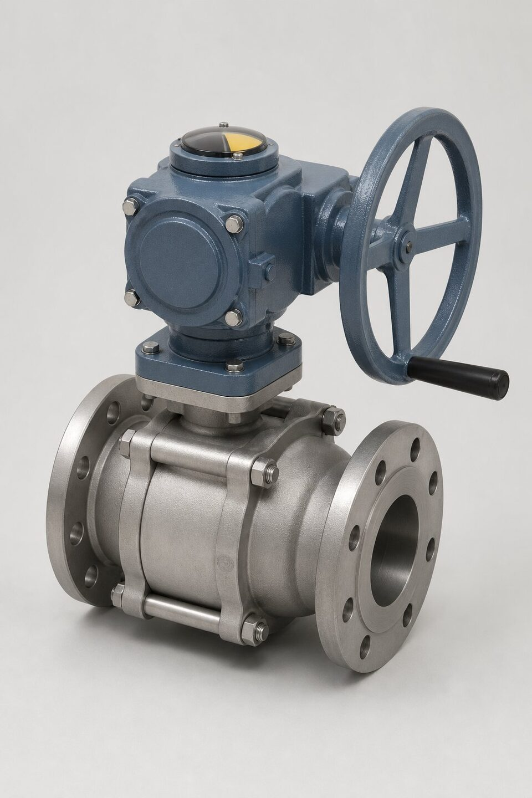

چرا گیربکس؟
نیروی لازم برای باز و بسته کردن شیر با سایز، کلاس فشاری و اصطکاک نشیمنگاه زیاد میشود. در سایزهای بزرگ یا کلاسهای بالا، گشتاور مورد نیاز به قدری بالاست که اپراتور با فلکه مستقیم نمیتواند آن را تامین کند یا برای این کار به اهرمهای غیرایمن نیاز پیدا میکند. گیربکس با نسبت انتقال مشخص، گشتاور فلکه را چند برابر میکند؛ اپراتور نیروی کمتری در تعداد دور بیشتری اعمال میکند و شیر به نرمی و بدون ضربه عمل مینماید. نتیجه، هم ایمنی بیشتر و هم عمر بالاتر تریم شیر است.

انواع گیربکس
- چرخدنده کرمی: رایجترین نوع؛ نسبت انتقال بالا، جمعوجور و ذاتاً خودقفلشونده.
- چرخدنده مخروطی: برای تغییر جهت محور ورودی و خروجی، رایج در شیرهای دروازهای با ساقه رو.
- ترکیبی کرمی-مخروطی: برای شیرهای بزرگ با نیاز به تغییر جهت و نسبت بالا.
- فلکه مستقیم با شفت: فقط برای سایزهای کوچک که گشتاور شیر کم است.
انتخاب بر اساس گشتاور
مبنای انتخاب، گشتاور بیشینه مورد نیاز شیر در بدترین شرایط است؛ نه گشتاور میانگین. سازنده شیر باید گشتاور شکستن نشستن و گشتاور نشستن را ارائه دهد و گیربکس با نسبتی انتخاب شود که این گشتاور با نیروی متعارف اپراتور قابل تامین باشد. قاعده سرانگشتی صنعت، محدود کردن نیروی فلکه به حدی است که یک نفر بدون اهرم کمکی بتواند شیر را عمل کند. نسبتهای رایج از چند ده تا بیش از صد متغیرند و نسبت بالاتر به معنای تعداد دور بیشتر فلکه است؛ در نقاطی که سرعت عمل مهم است، این موضوع باید در نظر گرفته شود.
مقایسه روشهای عملیات دستی
| روش | محدوده کاربرد | مزیت اصلی | محدودیت |
|---|---|---|---|
| فلکه مستقیم | سایز کوچک و کلاس پایین | سادگی و هزینه کم | محدودیت گشتاور |
| گیربکس کرمی | متوسط تا بسیار بزرگ | نسبت بالا، خودقفلشوندگی | سرعت پایین عمل |
| گیربکس مخروطی | شیرهای ساقه رو بزرگ | تغییر جهت نیرو | پیچیدگی بیشتر |
| اهرم کمکی | موقتی | بدون هزینه | غیرایمن و ممنوع در بسیاری پروژهها |
استفاده از اهرم کمکی روی فلکه معمولاً در مشخصه پروژهها ممنوع است چون به تریم آسیب میزند.
نگهداری و خرابیهای رایج
گیربکس تجهیز کممصرفی است اما نه بینیاز از نگهداری. گریس داخلی به مرور خشک یا آلوده میشود و در سرویسهای مرطوب، ورود رطوبت از محل شفت میتواند باعث زنگزدگی شود. در بازرسیهای دورهای باید نشتی گریس، روان بودن حرکت و وضعیت نشانگر وضعیت شیر کنترل شود. خرابی رایج، سایش چرخ کرمی در اثر استفاده با اهرم کمکی یا ضربه است که خود را با لقی فلکه نشان میدهد. در سفارش، درجه حفاظت بدنه گیربکس متناسب با محیط نصب ذکر شود؛ محیطهای خورنده دریایی به بدنه و پوشش ویژه نیاز دارند.
جمعبندی
گیربکس، رابط بین توان اپراتور و نیاز شیر است و انتخاب آن باید بر اساس گشتاور واقعی شیر انجام شود. با انتخاب نسبت مناسب، درجه حفاظت متناسب محیط و بازرسی دورهای گریس و چرخدندهها، گیربکس سالها بدون مشکل کار میکند و از استفاده از اهرمهای غیرایمن جلوگیری مینماید.
سوالات رایج
چرا به گیربکس نیاز داریم؟
برای کاهش نیروی لازم اپراتور: گیربکس گشتاور ورودی فلکه را با نسبت انتقال چند برابر کرده و باز و بسته کردن شیرهای بزرگ و پرفشار را ممکن میسازد.
رایجترین نوع گیربکس کدام است؟
چرخدنده کرمی؛ چون نسبت انتقال بالا در فضای فشرده میدهد و ذاتاً از برگشت نیروی خط به سمت فلکه جلوگیری میکند.
نسبت انتقال چگونه انتخاب میشود؟
بر اساس گشتاور مورد نیاز شیر و حداکثر نیروی قابل اعمال توسط اپراتور؛ به طوری که با یک فلکه استاندارد، شیر به راحتی عمل کند.
گیربکس چه نگهداری نیاز دارد؟
گریسکاری دورهای، بازرسی نشتی روغن یا گریس، و بررسی سایش چرخدندهها در سرویسهای با سیکل کاری بالا.
مطالب مرتبط
- راهنمای انتخاب عملگر شیرآلات
- راهنمای جامع شیر دروازهای
- راهنمای شیرهای پروانهای (API 609)
- راهنمای جامع شیر توپی (بال ولو)
با ذکر گشتاور شیر و نسبت انتقال، گیربکس متناسب با فلکه یا آماده نصب روی عملگر عرضه میشود.
مشاهده صفحه محصول ← ثبت RFQ همین محصولتامین این تجهیزات را به پیشرو تجهیز فرتاک بسپارید
شرکت پیشرو تجهیز فرتاک تامینکننده تخصصی تجهیزات صنعتی برای پروژههای نفت، گاز، پتروشیمی، فولاد و نیروگاهی است. برای دریافت پیشنهاد فنی و قیمت، استعلام (RFQ) خود را ثبت کنید تا کارشناسان مهندسی فروش در کوتاهترین زمان پاسخ دهند.
- تامین شیرآلات صنعتیخانواده کامل شیر با گواهی مواد و تست
- تامین تجهیزات صنایع نفت و گازپکیج مواد مطابق وندورلیست